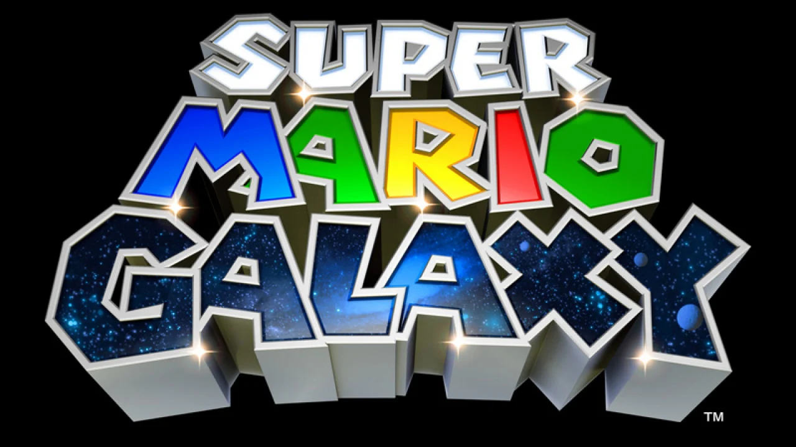

Classics of Yore Presents:

Welcome to the first ever Classics of Yore feature! For the maiden voyage of my new site, I will be taking you through my favorite game of all time, the 2015 smash hit Bloodborne, quite possibly the greatest and most important PlayStation 4 game throughout its lifecycle.
Quite possibly the most influential game of its generation, the fingerprints of Resident Evil 4 can be traced from the following generation's gunplay-centric Gears of War to fellow survival horror compatriot Dead Space and even the likes of Nathan Drake's adventures in the Uncharted series. Indeed, one could equate the sheer revolution that this game sparked for third-person shooters to what Super Mario Bros. did for the platformer genre in 1985.